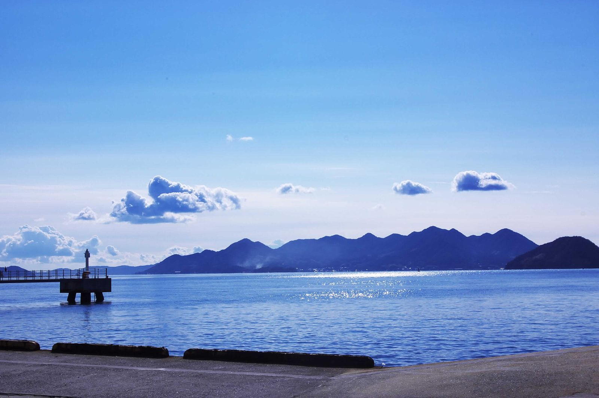
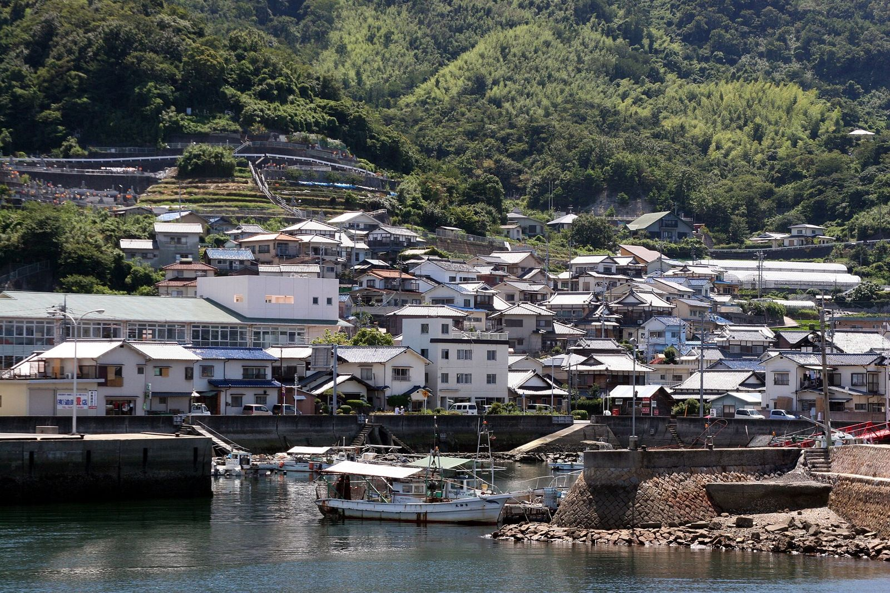
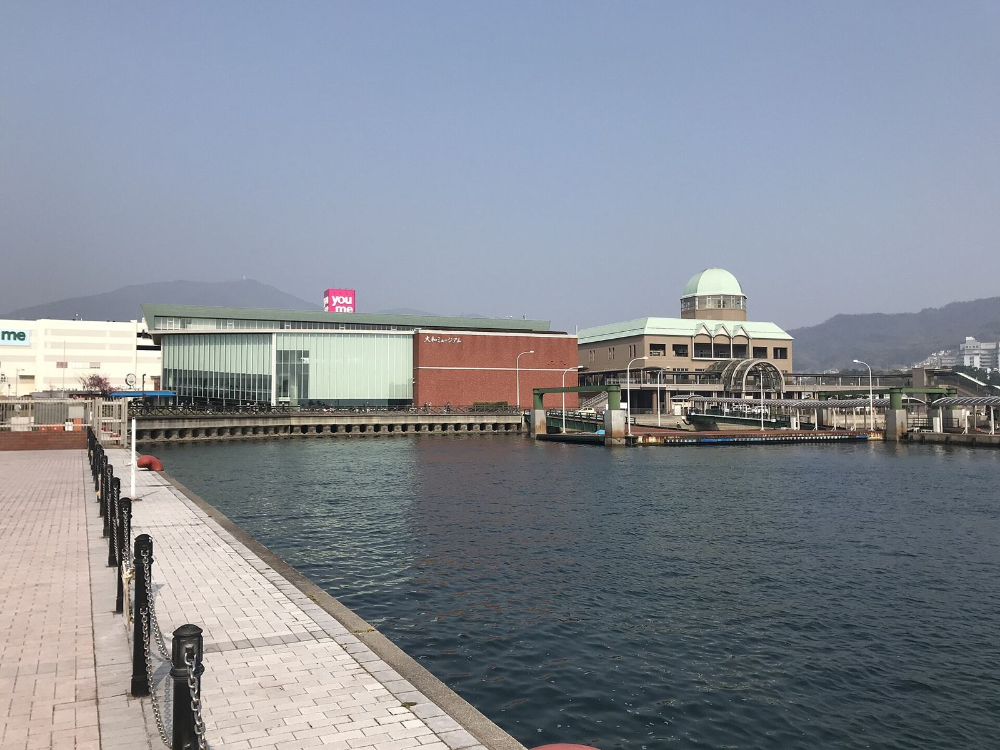
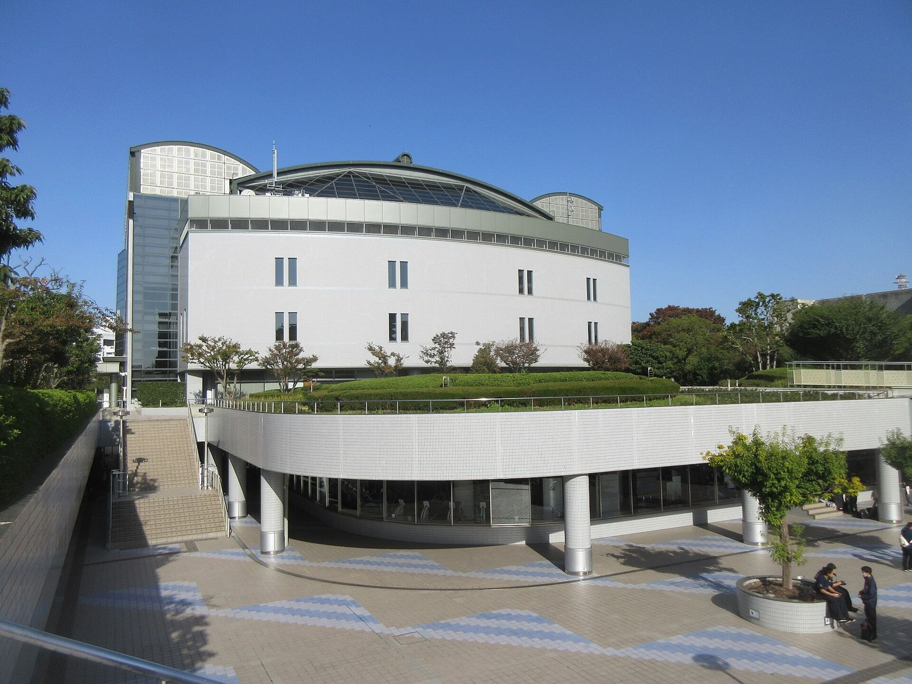

ゆりやと 広島でBUMPを

ユウキとゆりやの広島。宿は江田島、ライブは28日。
- ライブ
- 11/2818:00 開演
- 宿
- 2泊江田島B邸
- 車
- 48時間ガッツ
下にスクロールで 26日夜 → 29日昼
4日を1本の線でつなぐ

ユウキは26日の夜行バスで先に広島へ。27日の朝に車を借りて、呉を通って江田島の家へ入ります。28日にライブ、29日の朝に車を返して、そのまま自転車ツアーへ。
- 126日 木 夜ユウキ 新宿から夜行バス
- 227日 金広島で車を借りる → 呉 → 音戸大橋 → 江田島B邸
- 328日 土ゆりやと合流 → 18:00 BUMP OF CHICKEN（広島グリーンアリーナ）→ 江田島へ戻る
- 429日 日9:00 車を返す → 10:00 自転車ツアー（13:00まで）
- ゆりやが着く日と時間未定27日の夜か28日の昼。決まったらこのページに書きます
- 自転車ツアーの集合場所確認待ちいつもの集合は平和記念公園レストハウス。石飛さんに確認
- 29日のツアーのあと未定帰りの便はふたりで決める
ユウキは夜行バスで先に広島へ

新宿を夜8時に出て、朝9時すぎに広島の街のまんなか、広島バスセンターに着きます。ここから車の店までは歩いて11分。
- 出発
- 20:10バスタ新宿
- 到着
- 9:15広島バスセンター
- 料金
- ¥7,400〜WILLER
- 1WILLER EXPRESS WH1152便バスタ新宿 20:10 → 広島バスセンター 9:15（13時間05分）
- 2ほかの便JRバスのドリーム号は20:40発・9:05着。かごたびライナーは東京駅19:10発・7:30着
車を借りて呉へ海ぞいを走る

家に入れるのは16時から。それまでに、通り道の呉で大和ミュージアム（2026年4月にリニューアル）へ。
- 広島バスセンター着9:15夜行バスを降りる
- 歩いて ガッツ大手町店へ9:30827m・11分。路面電車の袋町電停から1分
- 車で 呉・大和ミュージアムへ10:30地図の計算で25分。朝の混雑を見て40分
- 大和ミュージアム〜12:009:00〜18:00・火曜休み（27日は金曜なので開いています）
- 呉でお昼12:00名物は海自カレーと細うどん
赤い音戸大橋を渡って島へ

呉から江田島へは、らせんを描いてのぼる真っ赤な音戸大橋を渡ります。橋を2本越えると江田島。家の近くの三高港まで、呉から地図の計算で34分です。
- 113:30 呉を出る音戸大橋 → 早瀬大橋 → 江田島
- 2島で買い出し夕ごはんと29日の朝ごはんを買っておく（29日は朝が早いので）
- 316:00 チェックイン江田島B邸は16:00〜21:00
江田島のADDressの家に2泊

瀬戸内の島の家。部屋は2人用の202号室。家守さんは大阪のゲストハウスでマネージャーをしていた人で、通訳案内士でもあります。
- チェックイン
- 16:00〜21:00
- 部屋
- 2022人まで
- 駐車場
- あり家の前に2〜3台
- 1場所江田島市・三高港から歩いて7〜8分
- 22人で泊まるユウキが予約して、ゆりやを「同伴者」で登録（無料・登録は最大3営業日かかるので早めに）
- 3車の人へ家の前の駐車場は狭め。不安なら三高港の駐車場に
ゆりやと合流してお好み焼き

江田島から広島の街までは、地図の計算で車で約1時間。ゆりやが着く時間に合わせて島を出ます。合流したら、ライブの前に広島のお好み焼きを。
- 江田島B邸を出る11:00ゆりやの到着時間で前後します
- 車で 広島の街へ12:00地図の計算で約1時間（59km）
- ゆりやと合流未定場所と時間はゆりやの移動が決まったら
- お好み焼き13:00ライブ前にしっかり食べておく
車は会場から15分の予約駐車場へ

会場の地下駐車場は22時を過ぎると車を出せません。15:30に、24時間出し入れできるakippaの駐車場に停めて歩きます（1.1km・15分）。
- akippa 広瀬町3-22徒歩15分24時間出し入れ自由・1日¥700〜・軽だけ（高さ220cmまで）・チェーンを外して入る
- B-Times レネッセスターツ榎町約1km24時間・予約で1日¥900〜（予備）
- 会場の地下駐車場会場の下30分230円・予約できない・22時を過ぎると出せない
- 基町クレド駐車場徒歩2分高さ155cmまでで、背の高い軽は入らない
BUMP OF CHICKEN広島グリーンアリーナ

BUMP OF CHICKEN TOUR 2026-2027 Ratio Clavis。ゆりやが当てたチケットです。終わったら歩いて駐車場に戻り、車で江田島へ。
- 開場
- 17:0011/28 土
- 開演
- 18:00
- 江田島まで
- 約1時間地図の計算
- 1チケットゆりやの名義（2枚）
- 2帰り駐車場まで歩いて15分 → 車で江田島まで約1時間。夜の運転なので無理はしない
- 3問い合わせ夢番地広島 082-249-3571
車を返して自転車で広島の街へ

ガッツの車は借りた店にしか返せません。9時に返せば48時間ちょうど。店から自転車ツアーのいつもの集合場所までは、歩いて7分です。
- 江田島B邸を出る7:30前の日に買った朝ごはんで
- ガソリンを満タンに8:40店の近くで
- ガッツ大手町店に返す9:00返却は19:00まで。ここで返すと48時間分
- 歩いて 平和記念公園レストハウスへ9:15514m・7分
- 自転車ツアー（sokoiko）10:00〜13:00石飛さん。集合場所は確認待ち
車はガッツレンタカー
広島大手町店で27日の9:30に借りて、29日の9:00に返します。予約はユウキがします。
- 軽の4ドア（A-2クラス）24時間¥3,190。48時間で¥6,380。24時間で300kmまで（この旅はおよそ250km）予約 →
- 広島大手町店中区大手町2-11-21・9:00〜19:00・年中無休・082-240-2282。広島バスセンターから歩いて11分予約 →
- 予約公式の予約ページから（じゃらんには出ていません）予約 →
乗り捨てはできません。借りた大手町店に返します。免責補償の料金は予約画面で確認します。
持ちもの
- 免許証運転する人
- チケットゆりや。スマホの充電も
- 上着11月末の島の夜は冷える。ライブの帰りも
- モバイルバッテリーライブとGoogleマップで電池が減る
- 歩きやすい靴駐車場から会場まで15分・29日は自転車
- ユウキ夜行バスの予約（26日 20:10 バスタ新宿発）
- ユウキADDress 江田島B邸 202号室の申請（27・28日）／ゆりやを同伴者に登録
- ユウキガッツ大手町店の予約（27日 9:30 → 29日 9:00）
- ユウキakippa 広瀬町3-22の予約（28日）
- ゆりや広島に着く日と時間を決める／石飛さんにツアーの集合場所を聞く
- ふたり29日の帰りの便
それでは 11月28日に
予定が変わったらユウキに言ってください。このページも直します。
写真: Wikimedia Commons（各写真の出典はページ内）・ADDress公式